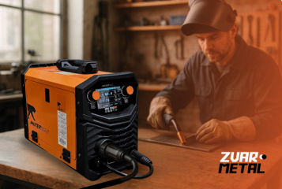
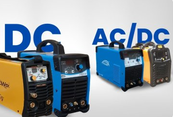
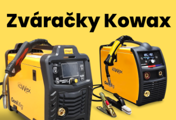
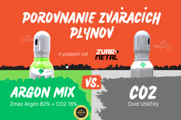

Osobný odber
na našej predajni


na našej predajni
Pri nakupe nad 150€
Opravime pokazene
zavolajte nám

Výber vhodnej zváračky na doma môže byť náročný, najmä ak hľadáte zariadenie, ktoré je univerzálne, ľahko ovládateľné a zároveň dostatočne výkonné. Pantermax MIG230DP je invertorová zváračka určená pre široké spektrum používateľov – od domácich majstrov, cez pokročilých hobby zváračov až po menšie dielne. V nasledujúcom článku sa dozviete, prečo je práve tento model jednou z najlepších volieb vo svojej kategórii.

Zváračky Tig môžu slúžiť na zváranie rôznych materiálov. Dôležitý rozdiel rozdiel, na ktorý treba myslieť je, či budete zvárať oceľ, nerez alebo či budete zvárať aj hliník. Prečo je to dôležité je, že pre zváranie ocele je potrebný zvárací jednosmerný prúd (DC). Týmto prúdom sa zvára pre väčšinu kovov, zatiaľ, čo pre zváranie hliníka je potrebný striedavý prúd. (AC) Použitie striedavého prúdu (AC) je nevyhnutné, pretože to umožňuje prelomiť oxidovú vrstvu na povrchu hliníka a dosiahnuť kvalitný zvar.

Firma Kowax je synonymom pre dobrú kvalitu a inováciu vo svete zváračiek. Táto Česká firma disponuje rozsiahlym portfóliom produktov zváracej techniky ako zváračky CO2, zváračky TIG, elektródy, zváracie horáky a ďalšie príslušenstvo.

Aký je rozdiel medzi zmesou Argónu + CO2 a samotným plynom CO2? Aké výhody alebo nevýhody samotné zváracie plyny ponúkajú? Aj to sa dočítate v tomto článku.